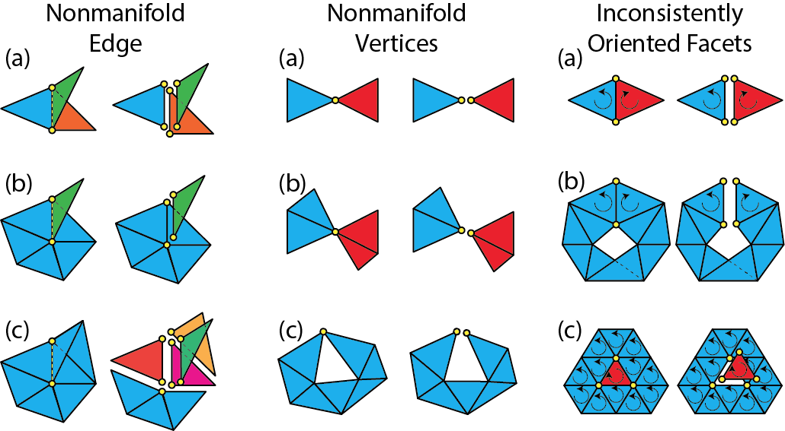

Mesh Cleanup
Lagrange provides a collection of cleanup and repair utilities for detecting and removing common mesh defects such as isolated vertices, duplicate elements, degenerate facets, short/long edges, holes, and non-manifold configurations.
Unlike the legacy cleanup functions, which return a new
mesh, the current utilities operate on a SurfaceMesh object in
place:
lagrange::SurfaceMesh<Scalar, Index> mesh = ...;
lagrange::function_name(mesh); // `mesh` is modified in place.
Because most functions mutate the mesh directly, cleanup operations can be
applied sequentially to progressively repair a mesh. (A few functions, such as
detect_degenerate_facets, are query-only and leave the mesh unchanged.)
Existing vertex/facet/corner/indexed attributes are carried over to the result
and updated as vertices and facets are added or removed.
Most functions take an optional Options struct to control their behavior. All
options have sensible defaults, so the struct can be omitted when the defaults
are sufficient.
Remove Isolated Vertices
An isolated vertex is a vertex that is not referenced by any facet. Remove them
with remove_isolated_vertices:
#include <lagrange/mesh_cleanup/remove_isolated_vertices.h>
lagrange::remove_isolated_vertices(mesh);
Remove Duplicate Vertices
Two vertices are considered duplicates if they have exactly the same coordinates. To remove duplicate vertices:
#include <lagrange/mesh_cleanup/remove_duplicate_vertices.h>
lagrange::remove_duplicate_vertices(mesh);
The behavior can be refined with RemoveDuplicateVerticesOptions:
#include <lagrange/mesh_cleanup/remove_duplicate_vertices.h>
lagrange::RemoveDuplicateVerticesOptions options;
// Two vertices are duplicates only if their positions *and* all listed
// attributes match exactly.
options.extra_attributes = {mesh.get_attribute_id("color")};
// Only merge duplicate vertices that lie on the boundary.
options.boundary_only = true;
lagrange::remove_duplicate_vertices(mesh, options);
extra_attributes: additional attributes that must also be equal for two vertices to be considered duplicates (e.g. only merge vertices sharing the same color).boundary_only: whentrue, only duplicate vertices on the boundary are merged.
Remove Duplicate Facets
Two facets are duplicates if they are formed by the same set of vertices. For
example, facet [1, 2, 3] is a duplicate of facet [3, 2, 1]. To remove all
duplicate facets:
#include <lagrange/mesh_cleanup/remove_duplicate_facets.h>
lagrange::remove_duplicate_facets(mesh);
By default, orientation is ignored. Set consider_orientation to keep facets
that differ only by orientation:
#include <lagrange/mesh_cleanup/remove_duplicate_facets.h>
lagrange::RemoveDuplicateFacetOptions options;
options.consider_orientation = true; // (0, 1, 2) and (2, 1, 0) are *not* duplicates.
lagrange::remove_duplicate_facets(mesh, options);
Facet Orientation
When orientation is ignored and a set of duplicate facets contains both orientations, the facets are removed based on the majority orientation: if both orientations appear equally often, all are removed; otherwise a single facet with the majority orientation is kept.
Geometrically Degenerate Facets
A facet is degenerate if all of its vertices are exactly collinear (for a triangle, this means its area is exactly zero). Lagrange relies on exact predicates for this test.
To detect degenerate facets without modifying the mesh, use
detect_degenerate_facets, which returns the indices of the degenerate facets:
#include <lagrange/mesh_cleanup/detect_degenerate_facets.h>
std::vector<Index> degenerate = lagrange::detect_degenerate_facets(mesh);
To remove them, use remove_degenerate_facets:
#include <lagrange/mesh_cleanup/remove_degenerate_facets.h>
lagrange::remove_degenerate_facets(mesh);
Implementation details
remove_degenerate_facets currently assumes a triangle mesh. Use
triangulate_polygonal_facets first if the input mesh
is not triangular. Non-degenerate facets adjacent to degenerate ones may be
split as a result of the removal.
Topologically Degenerate Facets
A facet is topologically degenerate if two or more of its corners refer to the
same vertex. For example, triangle [1, 1, 2] is topologically degenerate.
This is a special case of degeneracy that can be detected from connectivity
alone:
#include <lagrange/mesh_cleanup/remove_topologically_degenerate_facets.h>
lagrange::remove_topologically_degenerate_facets(mesh);
Remove Null Area Facets
Remove facets whose (unsigned) area falls at or below a threshold:
#include <lagrange/mesh_cleanup/remove_null_area_facets.h>
lagrange::RemoveNullAreaFacetsOptions options;
options.null_area_threshold = 0; // Facets with area <= threshold are removed.
options.remove_isolated_vertices = true; // Also remove any vertices left isolated.
lagrange::remove_null_area_facets(mesh, options);
null_area_threshold: facets with unsigned area less than or equal to this value are removed.remove_isolated_vertices: whentrue, vertices left isolated by the removal are also removed.
Remove Short Edges
Collapse all edges shorter than a given threshold:
#include <lagrange/mesh_cleanup/remove_short_edges.h>
Scalar threshold = 1e-3;
lagrange::remove_short_edges(mesh, threshold);
For finer control over which vertex is kept during a collapse and how much the
surrounding geometry is allowed to change, use RemoveShortEdgesOptions:
#include <lagrange/mesh_cleanup/remove_short_edges.h>
#include <numbers>
lagrange::RemoveShortEdgesOptions options;
options.threshold = 1e-3;
// Optional per-vertex importance: the vertex with the higher value survives a
// collapse. If left empty, importance is derived from local geometry.
options.vertex_importance_attribute_name = "importance";
// Reject a collapse if any surrounding facet normal would rotate by more than
// this angle. The default (pi/2) only rejects actual normal flips.
options.max_normal_deviation_angle = std::numbers::pi / 6;
lagrange::remove_short_edges(mesh, options);
Split Long Edges
Refine a mesh by splitting edges longer than a target length:
#include <lagrange/mesh_cleanup/split_long_edges.h>
lagrange::SplitLongEdgesOptions options;
options.max_edge_length = 0.1f; // Edges longer than this are split.
options.recursive = true; // Keep splitting until no edge exceeds the target.
lagrange::split_long_edges(mesh, options);
max_edge_length: edges longer than this value are split.recursive: whentrue, splitting is repeated until no edge exceedsmax_edge_length(splitting an edge introduces new edges that may themselves be too long).active_region_attribute: optionaluint8_tfacet attribute restricting splitting to a subset of facets. If empty, all edges are considered.edge_length_attribute: name of the edge-length attribute to use; it is computed automatically if it does not already exist.
Note
Only long edges are split. This differs from uniform refinement, where every edge is split.
Split Obtuse Triangles
Iteratively split obtuse triangles by splitting their longest edge at the projection of the opposite (obtuse) vertex:
#include <lagrange/mesh_cleanup/split_obtuse_triangles.h>
#include <numbers>
lagrange::SplitObtuseTrianglesOptions options;
options.max_angle = std::numbers::pi_v<float> / 2; // 90 degrees (the default).
options.max_iterations = 5; // Use 0 to iterate until convergence.
size_t num_splits = lagrange::split_obtuse_triangles(mesh, options);
max_angle: triangles with an interior angle strictly larger than this value (in radians) are considered obtuse and split.max_iterations: maximum number of split passes; use0to iterate until no obtuse triangles remain.active_region_attribute: optionaluint8_tfacet attribute restricting which facets are checked.
The function returns the total number of splits performed. Vertex attributes are linearly interpolated along each split edge.
Close Small Holes
Fill small topological holes in the mesh:
#include <lagrange/mesh_cleanup/close_small_holes.h>
lagrange::CloseSmallHolesOptions options;
options.max_hole_size = 16; // Only close holes with at most this many boundary vertices.
options.triangulate_holes = true; // Triangulate the filled holes (otherwise fill with polygons).
lagrange::close_small_holes(mesh, options);
max_hole_size: maximum number of boundary vertices a hole may have to be closed.triangulate_holes: whentrue, filled holes are triangulated; otherwise they are filled with a single polygon.
Resolve Non-Manifoldness
Lagrange can convert a non-manifold mesh into a manifold one by "pulling apart" non-manifold vertices and edges. To resolve both non-manifold vertices and edges:
#include <lagrange/mesh_cleanup/resolve_nonmanifoldness.h>
lagrange::resolve_nonmanifoldness(mesh);
Implementation details
Here is an illustration describing how Lagrange "pulls apart" non-manifold vertices and edges:

If the mesh only contains non-manifold vertices (no non-manifold edges and no
inconsistently oriented facets), the cheaper resolve_vertex_nonmanifoldness can
be used instead:
#include <lagrange/mesh_cleanup/resolve_vertex_nonmanifoldness.h>
lagrange::resolve_vertex_nonmanifoldness(mesh);
Warning
resolve_vertex_nonmanifoldness assumes the input mesh contains no
non-manifold edges or inconsistently oriented facets. Use
resolve_nonmanifoldness when either may be present.
UV Cleanup
Lagrange offers two utilities for repairing UV parameterizations.
Rescale UV Charts
Rescale each UV chart so that it is isotropic with respect to its 3D image:
#include <lagrange/mesh_cleanup/rescale_uv_charts.h>
lagrange::RescaleUVOptions options;
options.uv_attribute_name = ""; // Empty: use the first UV attribute found.
options.chart_id_attribute_name = ""; // Empty: compute charts from UV connectivity.
options.uv_area_threshold = 1e-6; // Triangles below this UV area are ignored.
lagrange::rescale_uv_charts(mesh, options);
UV Chart Overlap
rescale_uv_charts may produce overlapping UV charts, and a repacking may be necessary.
Unflip UV Triangles
Correct flipped UV triangles that arise from periodic parameterizations (e.g. the cylindrical parameterization of a cylinder, which produces a strip of flipped triangles):
#include <lagrange/mesh_cleanup/unflip_uv_triangles.h>
lagrange::UnflipUVOptions options;
options.uv_attribute_name = ""; // Empty: use the first indexed UV attribute.
lagrange::unflip_uv_triangles(mesh, options);
Note
unflip_uv_triangles targets flipped triangles caused by periodic
parameterization and is not intended for arbitrary flipped UV triangles. It
should be called after rescale_uv_charts.
Note
If an entire UV chart is flipped, please use unflip_uv_charts instead.
See the Mesh Cleanup reference documentation for more details.